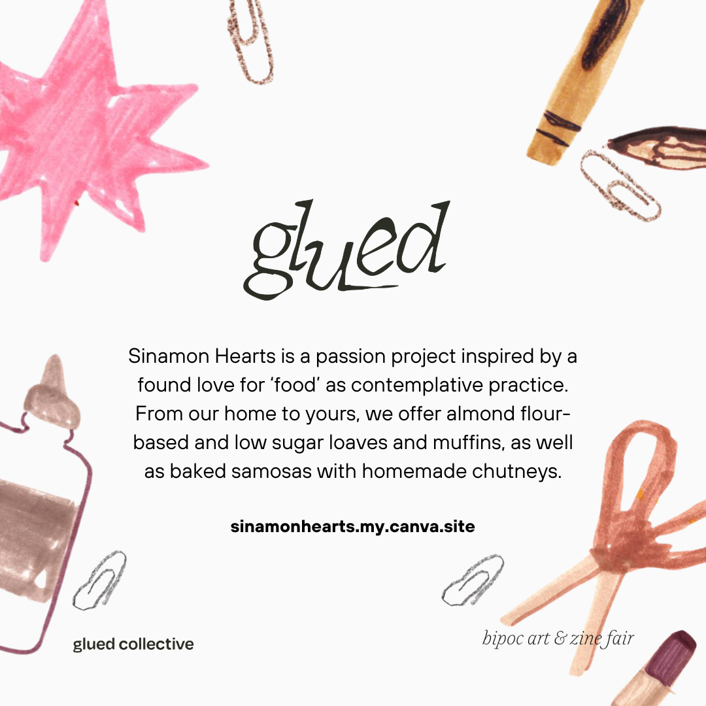
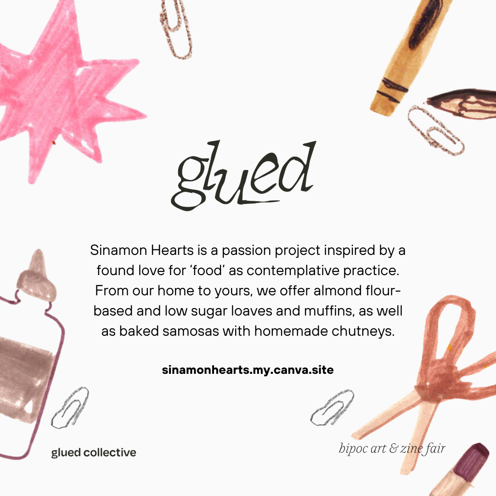

'All Together Now! Why is it so hard to move together, and how do we keep trying?' is an art hangout to collage, draw, write, and create zines on the theme of collective movement, justice, and working together. This poster was designed and fully illustrated by me and was used for print flyers, a postcard, and social media.
'My Petals are Bruised and I'm Still a Flower' was an intimate, community-based gathering hosted by PeerNetBC in partnership with community organizer and multidisciplinary artist Jotika from ‘Jotika Healing Arts’. The event featured storytelling, poetry, and other modalities of artistic expression that centred and celebrated Sick & Disabled Queer, Trans, Black, Indigenous and People of Colour (QTBIPoC) experiencing similar, intersectional barriers and struggles. I illustrated and designed the poster, did the event photography, and owned the digital portion of the event.


'GLUED, a BIPOC Zine and Art Fair' is a vendor market focused around sticking together, community and telling our stories. We wanted to uplift new and veteran BIPOC zinesters, print makers and creators by organizing this event as a way to create space for artists who are under-represented in many craft and market events in the city. I did the poster and social media posts while using another organizer's hand drawn art to remix into graphics and posters for the event.

 
